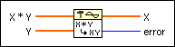

Deconvolution VI
Owning Palette: Signal Operation VIs
Requires: Full Development System
Computes the deconvolution of the input sequences X * Y and Y.
The deconvolution operation is performed using Fourier transform pairs.

 Add to the block diagram Add to the block diagram |
 Find on the palette Find on the palette |